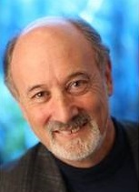

The LIMITS workshop aims to foster discussion on the impact of present and future ecological, material, energetic, and societal limits on computing. These topics are seldom discussed in contemporary computing research. A key aim of the workshop is to promote innovative, concrete research, potentially of an interdisciplinary nature, that focuses on technologies, critiques, techniques, and contexts for computing within fundamental economic and ecological limits. A longer-term goal is to build a community around relevant topics and research. We hope to impact society through the design and development of computing systems in the abundant present for use in a future of limits. This year we are colocating for the first time with ICT4S.
Oliver Bates, Lancaster University, o.bates@lancaster.ac.uk
Eli Blevis, Indiana University, eblevis@indiana.edu
Jay Chen, New York University - Abu Dhabi, jchen@cs.nyu.edu (co-chair)
Steve Easterbrook, University of Toronto, sme@cs.toronto.edu
Elina Eriksson, KTH Royal Institute of Technology, elina@kth.se
Kurtis Heimerl, University of Washington, kheimerl@cs.washington.edu
Lara Houston, Goldsmiths, University of London, lara@larahouston.co.uk
Ann Light, University of Sussex, ann.light@sussex.ac.uk
Bonnie Nardi, University of California - Irvine, nardi@ics.uci.edu (co-chair)
Lisa Nathan, University of British Columbia, lisa.nathan@ubc.ca
Teresa Cerratto Pargman, Stockholm University, tessy@dsv.su.se
Daniel Pargman, KTH Royal Institute of Technology, pargman@kth.se
Don Patterson, Westmont College, dpatterson@westmont.edu
Birgit Penzenstadler, California State University - Long Beach, bpenzens@gmail.com
Barath Raghavan, ICSI, barath@icsi.berkeley.edu
Christian Remy, University of Zurich, remy@ifi.uzh.ch
Debra Richardson, University of California - Irvine, djr@ics.uci.edu
Nithya Sambasivan, Google, nithyas@gmail.com
Douglas Schuler, Evergreen State College, douglas@publicsphereproject.org
Bill Tomlinson, Victoria University of Wellington, bill.tomlinson@vuw.ac.nz
Bonnie Nardi, UC Irvine
Barath Raghavan, ICSI
Michael Goldweber (ACM SIGCAS chair), Xavier
The submission site is now open for submissions; see below for details.
LIMITS aims to foster research on the impact of present or future ecological, material, energetic, and/or societal limits on computing and computing research to respond to such limits. The medium-term aim of the workshop is to foster concrete research, potentially of an interdisciplinary nature, that innovates on technologies, techniques, and contexts for computing within fundamental limits. A longer-term goal is to build a community around relevant topics and research. A goal of this community is to impact society through the design and development of computing systems in the abundant present for use in a future of limits and/or scarcity.
We envision two broad categories of papers: "discussion papers" and "systems papers" (see below). Submissions do not need to strictly fit into either category. All papers should succinctly frame the limits that are of interest to the author(s).
Discussion papers explore the nature of limits and computing. Good discussion contributions will detail the nature of the limits of interest, describe their impact on computing, and present directions for future research. Relevant topics include, but are not limited to:
Systems papers describe the design, implementation, and evaluation of computing systems that work within or help cope with limits. Also of interest are evaluations of systems that fail due to limits. Good systems contributions will address problems that meet present or future societal needs, describe clear limits and operational boundaries, and provide a detailed evaluation of the system in question. Relevant topics include, but are not limited to:
Abstract registration deadline: Feb 2, 2018, 11:59pm Pacific Time
Paper submission deadline: Feb 9, 2018, 11:59pm Pacific Time
Paper reviews available: March 7, 2018
Submit papers at this site. (If you have any issues with the submission site, please email jchen@cs.nyu.edu.)
Papers must be registered, with a title and abstract, by Feb 2, 2018 at 11:59pm Pacific Time. Papers must be submitted in PDF format by Feb 9, 2018, 11:59pm Pacific Time.
Papers should adhere to the following guidelines:
Reviewing will be non-blind; authors should include their names and contact information.
Keynote Speakers:
Peter Victor - York University
 Peter Victor, author of Managing without Growth: Slower by Design, not Disaster, is a Professor emeritus in Environmental Studies at York University. He has worked for nearly 50 years in Canada and abroad on economy and environment issues as an academic, consultant and public servant. His work on ecological economics has been recognized through the award of the Molson Prize in the Social Sciences by the Canada Council for the Arts in 2011, the Boulding Memorial Prize from the International Society for Ecological Economics in 2014, and his election to the Royal Society of Canada in 2015. Peter was the founding president of the Canadian Society of Ecological Economics and is a past-president of the Royal Canadian Institute for the Advancement of Science. Prior to becoming Dean of the Faculty of Environmental Studies at York University in 1996 he was Assistant Deputy Minister for the Environmental Science and Standards Division in the Ontario Ministry of the Environment. Currently Peter is a member of the Honorary Board of the David Suzuki Foundation and the Board of the Centre for the Advancement of a Steady State Economy, as well as belonging to several advisory boards in the public and private sectors.
Alan Borning - University of Washington
 Alan Borning is Professor Emeritus in the Department of Computer Science & Engineering at the University of Washington (although retirement has not yet been entirely successful). His research interests have been in human-computer interaction, value sensitive design, and in object-oriented and constraint programming languages. In addition to work on SEED, some example projects include the UrbanSim urban simulation system; OneBusAway, a set of tools that provide real-time transit information; the Living Voters Guide, an experiment in social media and civic engagement; and a series of constraint-based programming languages and systems. He received a BA from Reed College in 1971, and a PhD in computer science from Stanford University in 1979, co-advised by Alan Kay and Terry Winograd. Awards include a Fulbright Senior Scholar Award for lecturing and research in Australia, and being named a Fellow of the Association for Computing Machinery in 2001.
Alan Borning is Professor Emeritus in the Department of Computer Science & Engineering at the University of Washington (although retirement has not yet been entirely successful). His research interests have been in human-computer interaction, value sensitive design, and in object-oriented and constraint programming languages. In addition to work on SEED, some example projects include the UrbanSim urban simulation system; OneBusAway, a set of tools that provide real-time transit information; the Living Voters Guide, an experiment in social media and civic engagement; and a series of constraint-based programming languages and systems. He received a BA from Reed College in 1971, and a PhD in computer science from Stanford University in 1979, co-advised by Alan Kay and Terry Winograd. Awards include a Fulbright Senior Scholar Award for lecturing and research in Australia, and being named a Fellow of the Association for Computing Machinery in 2001.
| Time | Activity |
|---|---|
| 9:15 | Welcome |
| 9:30 | Invited Talk Managing without Growth: Slower by Design, not Disaster Peter Victor (York University) |
| 10:30 | Break |
| 10:45 | Paper Session 1 |
| Regenerative Computing: De-limiting hope Samuel Mann (Otago Polytechnic, New Zealand), Oliver Bates (Lancaster University, UK), Glenys Forsyth (Otago Polytechnic, New Zealand), Phil Osbourne (Otago Polytechnic, New Zealand) |
|
| Out of Control: Reframing Sustainable HCI Using Permaculture Szu-Yu (Cyn) Liu, Shaowen Bardzell, Jeffrey Bardzell (Indiana University) |
|
| 11:35 | Break |
| 11:50 | Announcements Breakout session 1: Personal Stories |
| 12:30 | Lunch |
| 1:45 | Paper Session 2 |
| Addressing Limits through Tracking Food Meena Devii Muralikumar, Bonnie Nardi (University of California, Irvine) |
|
| The DIY Resilient Smart Garden Kit Birgit Penzenstadler, Jason Plojo, Marinela Sanchez, Ruben Marin, Lam Tran, Jayden Khakurel (CSULB) |
|
| 2:35 | Break |
| 2:50 | Paper Session 3 |
| Meeting the Future in the Past - Using Counterfactual History to Imagine Computing Futures Elina Eriksson, Daniel Pargman (KTH - Royal Institute of Technology) |
|
| Design for Survivability: A Participatory Design Fiction Approach to Sustainability Edward Burnell (MIT) |
|
| 3:40 | Breakout session 2: Brainstorming counterfactual history scenarios Brainstorming on economic issues Brainstorming on Design for Respect |
| 5:00 | Dinner and Dessert Walk |
| Time | Activity |
|---|---|
| 9:15 | Invited Talk SEED: Solutions for Environment, Economy, and Democracy Alan Borning (University of Washington) |
| 10:15 | Break |
| 10:35 | Paper Session 4 |
| Making within Limits: Toward Salvage Fabrication Kristin N Dew, Samantha Shorey, Daniela Rosner (University of Washington) |
|
| Devices as a Commons: Limits to Premature Recycling David Franquesa, Leandro Navarro (Universitat Politècnica de Catalunya) |
|
| 11:25 | Breakout session 3: Bridging the Gap Between Speculation and Reality |
| 12:15 | Lunch |
| 1:40 | Paper Session 5 |
| Intangible Commodities with Free Delivery: Finding the Limit in Digitally Mediated e-Commerce Oliver Bates, Adrian Friday (Lancaster University, UK) |
|
| What Pushes Back from Considering Materiality in IT? Alan Borning, Batya Friedman, Deric Gruen (University of Washington) |
|
| Disablism and Constrained Computing: Checking Privilege and Power in a Future of Limits Vanessa Thomas (Aarhus University) |
|
| 2:55 | Break |
| 3:15 | Breakout session 4: Writing group paper What's next for LIMITS Report back |
| 5:00 | Wrap Up |
The workshop will be held on the campus of University of Toronto, Canada. There will be a registration fee of CAD$190 non-students and CAD$60 for students. The fee covers workshop registration, lunches and refreshments during the workshop, and a workshop dinner on May 13. It does not cover transportation.
Please register for LIMITS 2018 at this link.
We have some (limited) funds to offset some/all of the travel expenses for students and other attendees. If you would like to be considered for a travel grant, please email Bonnie Nardi (nardi@uci.edu) by March 30, with a brief summary of your likely travel expenses, and a brief statement of need ("I am a graduate student without external funding", etc.). We will notify all applicants of the outcome shortly thereafter.
The workshop is co-located with ICT4S this year. The iSchool at University of Toronto will be hosting the LIMITS workshop in the Bissell Building. Here is a map of all the venues (interactive version) . The Chelsea Hotel is about a 15 minute walk. Please find detailed accommodation information at this link and travel information here. Steve Easterbrook is also exploring some additional accommodation in an apartment style student residence (ie. 4-5 rooms with a shared kitchen and lounge) if that is of interest.

{kind=link}